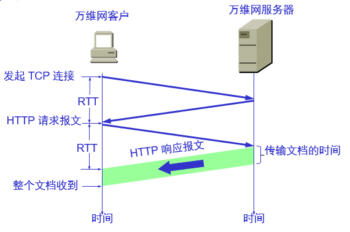
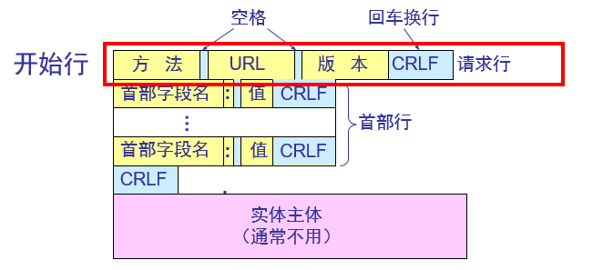
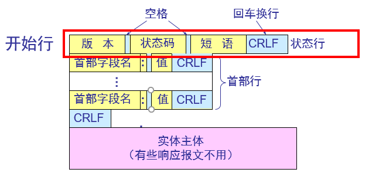
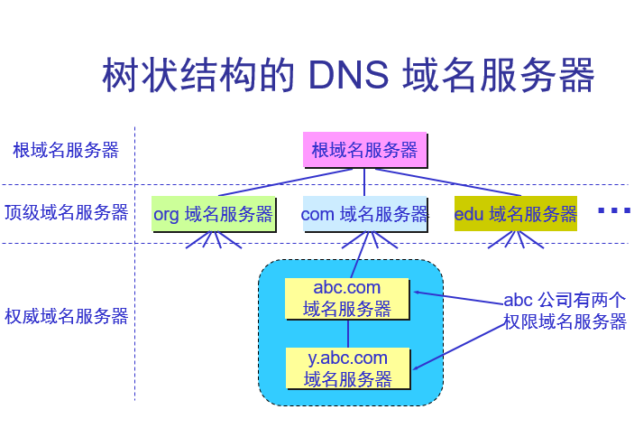
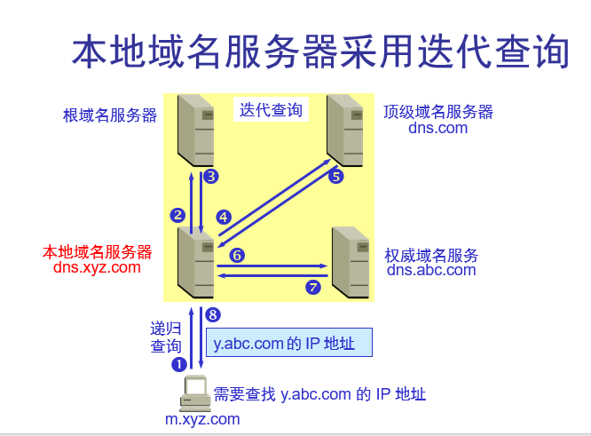

应用层协议原理
研发网络应用程序的核心是写出能够运行在不同的端系统和通过网络彼此通讯的程序，你不需要写在网络核心设备（如交换器和路由器）上运行的软件。网络核心设备并不
在应用层上起作用，特别是在网络层及以下层面起作用，这种基本设计将应哟软件限制在端系统。
从应用程序研发者的角度看，网络体系结构是固定的，并为应用程序提供了特定的服务集合。另一方面，应用程序体系结构由应用程序研发者设计，规定了如何在各端系统
上组织该应用程序。目前主流两种系统结构：客户-服务器体系结构和对等体系结构。
进程通讯
网络通讯实际上是两个不同端系统上的进程，通过跨越计算机网络交换报文儿相互通信。发送进程生成并向网络中发送报文；接受进程接受这些报文并可能通过回送报
文进行响应.
客户和服务器进程:
在一对进程之间的通信会话场景中，发起通信的进程标识为客户端，在会话开始时等待联系的进程是服务器。
进程与计算机网络之间的接口：
进程通过一个称为套接字的软件接口向网络发送报文和从网络接受报文。应用程序的开发者可以控制套接字在应用层端的一切，但对套接字的运输层端几乎没有什么控
制权，仅限于：1、选择运输层协议；2、也许能设定几个运输层参数(如最大缓冲和最大报文的长度等)；
进程寻址：
在一台主机上运行的进程为了向另一台主机上运行的进程发送分组，发送方需要知道接受端进程的地址；IP地址，标识主机地址，端口号，标识主机上的通讯的进程；
可供应用程序使用的运输服务
套接字是应用程序进程和运输层协议之间的接口；一个运输层协议能够为调用它的应用程序提供什么样的服务？可靠数据传输，吞吐量，定时和安全性；
因特网提供的运输服务
TCP服务：
TCP服务包括面向连接服务和可靠数据传输服务。
面向连接服务：应用程序数据报文开始流动之前，TCP让客户和服务器交换运输层控制信息，这个握手过程提醒客户和服务器，让他们对大量分组的到来做准备，
握手阶段之后，一个TCP连接就在两个进程的套接字之间建立了，这是一条全双工的。当应用程序结束报文发送时，必须拆除该连接。
可靠数据传输服务：
通讯进程能够依靠TCP，无差错、按适当顺序交付所有发送的数据。当应用程序的一端将字节流传输进套接字时，它能够依靠TCP将相同的字节流交付给接收方的
套接字，而没有字节的丢失和冗余。
UDP服务：
UDP是无连接的，进程通讯前没有握手过程。是一种不可靠传输服务，当进程将一个报文发送进UDP套接字时，UDP协议不保证该报文将到达接受进程。而且到达的
报文可能是乱序的。
应用层协议
应用层协议定义了运行在不同端系统上的应用程序进程如何互相传递报文：
交换的报文类型（如请求报文和响应报文）
各种 报文类型的语法（如报文中各个字段及这些字段是如何描述的）
字段的语法（这些字段中信息的含义）
确定一个进程何时以及如何发送报文，对报文进行响应的规则
Web和Http
万维网的工作方式
万维网以客户-服务器方式工作。
浏览器就是在用户计算机上的万维网客户程序。万维网文档所驻留的计算机则运行服务器程序，因此这个计算机也称为万维网服务器。
客户程序向服务器程序发出请求，服务器程序向客户程序送回客户所要的万维网文档。
在一个客户程序主窗口上显示出的万维网文档称为页面(page)。
万维网必须解决的问题
怎样标志分布在整个因特网上的万维网文档？
使用统一资源定位符 URL (Uniform Resource Locator)来标志万维网上的各种文档。
使每一个文档在整个因特网的范围内具有唯一的标识符 URL。
用何协议实现万维网上各种超链的链接？
在万维网客户程序与万维网服务器程序之间进行交互所使用的协议，是超文本传送协议 HTTP (HyperText Transfer Protocol)。
HTTP 是一个应用层协议，它使用 TCP 连接进行可靠的传送。
怎样使各种万维网文档都能在因特网上的各种计算机上显示出来，同时使用户清楚地知道在什么地方存在着超链？
超文本标记语言 HTML (HyperText Markup Language)使得万维网页面的设计者可以很方便地用一个超链从本页面的某处链接到因特网上的任何一个万维网
页面，并且能够在自己的计算机屏幕上将这些页面显示出来。
怎样使用户能够很方便地找到所需的信息？
为了在万维网上方便地查找信息，用户可使用各种的搜索工具（即搜索引擎）。
统一资源定位符 URL
由以冒号隔开的两大部分组成，并且在 URL 中的字符对大写或小写没有要求。
URL 的一般形式是：<协议>://<主机>:<端口>/<路径>
协议：ftp——文件传送协议/http——超文本传送协议
主机：是存放资源的主机在因特网中的域名
端口/路径：有时可省略
使用 HTTP 的 URL 的一般形式
http://<主机>:<端口>/<路径>
HTTP 的默认端口号是 80，通常可省略
若再省略文件的<路径>项，则 URL 就指到因特网上的某个主页(home page)
用户点击鼠标后所发生的事件
浏览器分析超链指向页面的 URL
浏览器向 DNS 请求解析 www.baidu.com 的 IP 地址
域名系统 DNS 解析出百度服务器的 IP 地址
浏览器与服务器建立 TCP 连接
浏览器发出取文件命令：GET /xxx/xxx/index.htm
服务器给出响应，把文件 index.htm 发给浏览器
TCP 连接释放
HTTP 的主要特点
HTTP 是面向事务的客户服务器协议。
HTTP 1.0 协议是无状态的(stateless)。
HTTP 协议本身也是无连接的，虽然它使用了面向连接的 TCP 向上提供的服务
请求一个万维网文档所需的时间

持续连接
HTTP/1.1 协议使用持续连接。
万维网服务器在发送响应后仍然在一段时间内保持这条连接，使同一个客户（浏览器）和该服务器可以继续在这条连接上传送后续的 HTTP 请求报文和响应报文。
这并不局限于传送同一个页面上链接的文档，而是只要这些文档都在同一个服务器上就行。
持续连接的两种工作方式
非流水线方式：客户在收到前一个响应后才能发出下一个请求。这比非持续连接的两倍 RTT 的开销节省了建立 TCP 连接所需的一个 RTT 时间。但服务器在发送完一个对
象后，其 TCP 连接就处于空闲状态，浪费了服务器资源。
流水线方式：客户在收到 HTTP 的响应报文之前就能够接着发送新的请求报文。一个接一个的请求报文到达服务器后，服务器就可连续发回响应报文。使用流水线方式时，
客户访问所有的对象只需花费一个 RTT时间，使 TCP 连接中的空闲时间减少，提高了下载文档效率。
HTTP 的报文结构
HTTP 有两类报文：
请求报文——从客户向服务器发送请求报文。
响应报文——从服务器到客户的回答。
由于 HTTP 是面向正文的(text-oriented)，因此在报文中的每一个字段都是一些 ASCII 码串，因而每个字段的长度都是不确定的。
请求报文
报文由三个部分组成，即开始行、首部行和实体主体。在请求报文中，开始行就是请求行。

响应报文
响应报文的开始行是状态行。状态行包括三项内容，即 HTTP 的版本，状态码，以及解释状态码的简单短语。

HTTP 请求报文的方法
OPTION:请求一些选项的信息
GET:请求读取由 URL所标志的信息
HEAD:请求读取由 URL所标志的信息的首部
POST:给服务器添加信息（例如，注释）
PUT:在指明的 URL下存储一个文档
DELETE:删除指明的 URL所标志的资源
TRACE:用来进行环回测试的请求报文
CONNECT:用于代理服务器
状态码
1xx 表示通知信息的，如请求收到了或正在进行处理。
2xx 表示成功，如接受或知道了。
3xx 表示重定向，表示要完成请求还必须采取进一步的行动。
4xx 表示客户的差错，如请求中有错误的语法或不能完成。
5xx 表示服务器的差错，如服务器失效无法完成请求。
用户与服务器的交互：cookie
万维网站点使用 Cookie 来跟踪用户。
Cookie 表示在 HTTP 服务器和客户之间传递的状态信息。
使用 Cookie 的网站服务器为用户产生一个唯一的识别码。利用此识别码，网站就能够跟踪该用户在该网站的活动。
Web缓存（代理服务器）
代理服务器(proxy server)又称为万维网高速缓存(Web cache)，它代表浏览器发出 HTTP 请求。
万维网高速缓存把最近的一些请求和响应暂存在本地磁盘中。
当与暂时存放的请求相同的新请求到达时，万维网高速缓存就把暂存的响应发送出去，而不需要按 URL 的地址再去因特网访问该资源。
服务代理流程
浏览器访问因特网的服务器时，要先与企业网的高速缓存建立 TCP 连接，并向高速缓存发出 HTTP 请求报文
若高速缓存已经存放了所请求的对象，则将此对象放入 HTTP 响应报文中返回给浏览器
否则，高速缓存就代表发出请求的用户浏览器，与因特网上的源点服务器建立 TCP 连接，并发送 HTTP 请求报文
源点服务器将所请求的对象放在 HTTP 响应报文中返回给企业网的高速缓存
高速缓存收到此对象后，先复制在其本地存储器中（为今后使用），然后再将该对象放在 HTTP 响应报文中，通过已建立的 TCP 连接，返回给请求该对象的浏览器。
缓存失效机制：条件Get方法
DNS:因特网的目录服务
DNS提供的服务
识别主机有两种方式，通过主机名或者IP地址，人们喜欢便于记忆的主机名标识方式，而路由器则更擅长定长的、有着层次结构的IP地址，域名系统（DNS）就是一种
将主机名到IP地址转换的服务（将主机名转换为其背后的IP地址）。DNS是：1、一个由分层的DNS服务实现的分布式数据库；2、一个使得主机能够查询分布式数据库的应用层协议。
DNS通常由其他应用层协议所使用，DNS给使用它的因特网应用带来了额外的时延；
DNS提供的其他服务：
主机别名：有着复杂主机名的主机能够拥有一个或多个别名，主机别名比主机规范名更加容易记忆，应用程序可以调用DNS来获得主机别名对应的规范主机名以及主机的IP地址；
邮件服务器地址：为了使得电子邮件地址容易记忆，如Bob电子邮件地址Bob@gmail.com这样简单，然而谷歌邮件服务器主机名可能更为复杂，不想gmail.com那样容易记忆，电
子邮件应用程序可以调用DNS，对提供的主机名别名进行解析，以获得该主机的规范主机名和IP地址；
负载均衡：DNS也用于在冗余的服务器之间进行负载分配，繁忙的站点（如cnn.com）被冗余分配在多台服务器上，每台服务器都运行在不同的端系统上，每个都有着不同的IP地址。
由于这些冗余的Web服务器,一个IP地址集合因此与同一个规范主机名相联系。DNS数据库中存着这些IP地址集合。当客户对映射到某地址集合的名字发出一个DNS请求时，该服务器用
IP地址的整个集合进行响应，但在每个回答中循环这些地址次序。因此客户通常总是向IP地址排在最前的服务器发送Http请求报文，所以DNS就在所有这些冗余的Web服务器之间循环分配了负载。
DNS的循环同样可以用于邮件服务器。
DNS工作原理
假设运行在用户主机上的某些应用程序需要将主机名转换成IP地址，这些程序将调用DNS客户端，并指明需要被转换的主机名，用户主机上的DNS接收到后，向网络发送一各NDS查询报文，
所有的NDS和回到报文使用UDP数据报经典的53号端口发送，经过若干毫秒到若干秒的时延后，用户主机上的DNS接收到一个提供所希望映射的DNS回答报文。这个映射结果则被传递到调用
DNS的应用程序，从应用程序的角度看，DNS是一个提供简单，直接的转换服务的黑盒子。实际上，NDS系统非常复杂，它由分布于全球的大量DNS服务器以及定义了DNS服务器与查询主机
通讯方式的应用层协议组成。
分布式、层次数据库
DNS使用了大量的DNS服务器，他们以层次方式组织，并且分布在全世界范围内。没有一台主机拥有所有因特网上的主机映射，相反，这些映射分布在所有的DNS服务器上。
大致来说，有3种类型的DNS服务器：根DNS服务器，顶级域名（TLD）DNS服务器和权威DNS服务器。假定一个主机访问主机名www.baidu.com,粗略来说，将发生下列事件：客户先与根
服务器之间进行联系，它将返回顶级域名com的TLD服务器的IP地址，该客户则与这些TLD服务器之一联系，它将baidu.com返回权威服务器的IP地址，最后客户与baidu.com权威服务器之一联系，
它为主机名www.baidu.com返回其IP地址。
根DNS服务器：有400多个根服务器遍及全球，根名字服务器提供TLD服务器的IP地址；
顶级域DNS服务器：对于每个顶级域（如com、org、net、edu和gov）和所有的国家顶级域（cn、uk、hk）,都有TLD服务器，TLD服务器提供了权威DNS服务器的IP地址。
权威DNS服务器：在因特网上具有公共可访问主机（如web服务器和邮件服务器）的每个组织机构必须提供公共可访问的DNS记录，这些记录将这些主机的名字映射为IP地址。
一个组织机构的权威DNS服务器收藏了这些DNS记录。一个组织能够选择实现它自己的权威DNS服务器以保存这些记录；或者该组织能够支付费用，让这些记录存储在某个服务提供商
的一个权威服务器中。

本地DNS服务
严格来说本地DNS服务不属于DNS服务器的层次结构，但他对DNS层次结构是至关重要的。
当一个主机发出 DNS 查询请求时，这个查询请求报文就发送给本地域名服务器。
每一个因特网服务提供者 ISP，或一个大学，甚至一个大学里的系，都可以拥有一个本地域名服务器，
这种域名服务器有时也称为默认域名服务器。
提高域名服务器的可靠性
DNS 域名服务器都把数据复制到几个域名服务器来保存，其中的一个是主域名服务器，其他的是辅助域名服务器。
当主域名服务器出故障时，辅助域名服务器可以保证 DNS 的查询工作不会中断。
主域名服务器定期把数据复制到辅助域名服务器中，而更改数据只能在主域名服务器中进行。这样就保证了数据的一致性。
域名的解析过程
主机向本地域名服务器的查询一般都是采用递归查询。如果主机所询问的本地域名服务器不知道被查询域名的 IP 地址，那么本地域名服务器就以
DNS 客户的身份，向其他根域名服务器继续发出查询请求报文。
本地域名服务器向根域名服务器的查询通常是采用迭代查询。当根域名服务器收到本地域名服务器的迭代查询请求报文时，要么给出所要查询的 IP
地址，要么告诉本地域名服务器：“你下一步应当向哪一个域名服务器进行查询”。然后让本地域名服务器进行后续的查询。

DNS缓存
每个域名服务器都维护一个高速缓存，存放最近用过的名字以及从何处获得名字映射信息的记录。
可大大减轻根域名服务器的负荷，使因特网上的 DNS 查询请求和回答报文的数量大为减少。
为保持高速缓存中的内容正确，域名服务器应为每项内容设置计时器，并处理超过合理时间的项（例如，每个项目只存放两天）。
当权限域名服务器回答一个查询请求时，在响应中都指明绑定有效存在的时间值。增加此时间值可减少网络开销，而减少此时间值可提高域名转换的准确性。
P2P文件分发
对位于数据中心的专用服务器有最小的依赖，相反，应用程序在间断连接的主机对之间使用直接连接通讯，这些主机对成对方为对等方，这些对等方并不为服务提供商所有，相反
却为用户控制的桌面机所有，大多数对等方驻留在家庭，大学和办公室。因为这种对等方通信不必通过专门的服务器，该体系结构被称为对等方到对等方的。
视频流和内容分发网
Http流和DASH
CDN
CDN管理分布在多个地理位置上的服务器，在它的服务器上存储视频的副本，并将所有试图将每个用户请求定向到一个将提供最好用户体验的CDN位置。一旦CND集群准备就绪，
他就可以跨集群复制内容，CND可能不希望将每个视频的副本放置在每个集群中，因为某些视频很少观看或只在某些国家中流行。事实上，许多CND没有将视频推入到他们的集群。
而是使用一种简单的拉策略：如果客户向一个未存储该视频的集群请求某视频，则该集群检索该视频（从中心仓库或者另一个集群），向客户流式传输视频时的同时在本地存储一个副本。
类似于因特网缓存，当某集群存储器变满时，它删除不经常请求的视频。
CDN操作
当用户主机中的一个浏览器指令检索一个特定视频时，CND必须截获该请求，以便能够：1、确定此时适合用于该客户的CND服务器集群；2、将客户请求重定向到该集群的某台服务器。
CDN操作流程：
假定一个内容服务提供商NetCinema，雇佣了第三方CND公司KingCDN来向其客户分发视频。在NetCinema的Web网页上，它的每个视频都被指派了一个URL，该URL包括了一个字符串“video”
以及该视频本身的独特标识符；例如http://video.netcinema.com/123456,接下来会执行以下步骤：
1、用户访问位于NetCinema的web网页；
2、当用户点击连接http://video.netcinema.com/123456时，该用户主机发送了一个对video.netcinema.com的DNS请求；
3、用户的本地DNS服务器将该DNS请求中继到一台用于NetCinema的权威DNS服务器，该服务器观察到主机名video.netcinema.com的字符串“video”.为了将该LDNS请求
移交给KingCDN,NetCinema权威DNS服务器并不返回一个IP地址，而是向LDNS返回一个KingCDN的主机名，如a11105.kingcnd.com.
4、从这时起，DNS请求进入了KingCDN专用DNS基础设施。用户的LDNS则第二次请求，此时是对a11105.kingcnd.com的DNS请求，KingCDN的DNS最终向LDNS返回KingCDN
内容服务器的IP地址。正是在这里，KingCDN的DNS系统中，指定了CND服务器，客户将能够从这台主机服务器接受它的内容。
5、LDNS向用户主机转发内容服务CDN节点的IP地址；
6、一旦客户收到KingCDN内容服务器的IP地址，它与具有该IP的服务器创建一条TCP连接，并且发出对该视频的Http Get请求。如果使用DASH,服务器将
首先向客户发送具有URL列表的告示文件，每个URL对应视频的每个版本，并且客户将动态地选择来自不同版本的块。
集群选择策略
集群选择策略，即动态将客户定向到CND中某个服务器集群或者数据中心的机制；即经过客户端的DNS查找，CND得知了该客户的LDNS服务器的IP地址，在得知该IP地址后，
CDN需要基于该IP地址选择一个适当的集群：
地理位置上最为临近：每个LDNS IP地址都映射到一个地理位置。当从一个特殊的LDNS接受到一个DNS请求时，DNS选择地理位置上最为接近的集群。
缺点：1、就网络路径的长度和跳数而言，地理位置最临近的集群，可能并不是最近的集群。2、某些端用户配置使用位于远地的LDNS；3、这种简单的策略忽略了时延和可用宽带
随因特网路径时间而变化，总是为特定客户指派相同的集群。
基于当前流量条件为客户决定最好的集群，CDN能够对其集群和客户之间的时延和丢包性能执行周期性的实时测量。比如：CND能够让它的每个集群周期性地向位于世界所有的
LDNS发送探测分组，这种方法缺点是许多LDNS被配置为不会响应这些探测。
套接字接口（略）